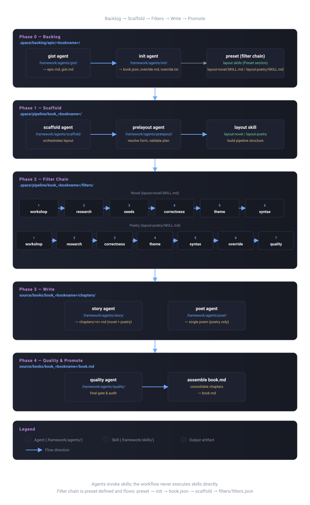

Writer Agent — Implementation Guide
This guide explains how to use the writer agent: a subject-agnostic literary engine that turns backlog epics, workshop narratives, and poetry topic lists into finished book chapters. It weaves three things at runtime: Context (reference and grounding), Style (the selected voice), and Theme (the selected thematic lens).
The authoritative engine lives in .framework/workflows/write.md. This guide is a practical map of that workflow, not a replacement for it.
.framework/rules/filters.md and applies to all workflows. Every book pipeline passes its material through ordered filters, each owning a folder in the pipeline.
Architecture Overview
| File | Role |
|---|---|
.framework/workflows/write.md | The writing engine. Defines commands, scaffolding, filter execution, form selection, config, and writing rules. |
.framework/skills/layout-novel/SKILL.md | The novel layout authority. Owns novel scaffold shape, book.json, characters, moods, workshop metadata, filters, and chapter/segment path invariants. |
.framework/skills/layout-poetry/SKILL.md | The poetry layout authority. Owns poetry scaffold shape, model.json, bookseed.txt, progress, override, filters, and one-segment chapter layout. |
.framework/skills/research/SKILL.md | The scaffold research step. Runs after layout before chapters are written. |
.space/backlog/epic/<bookname>/epic.md | The backlog epic. The single source of truth for a novel's story. Can be created independently with gist. |
.space/backlog/epic/<bookname>/book.json | The backlog book plan. The chapter-layout plan plus the authoritative filter_chain and word_target. Produced by init; the blueprint scaffold builds from. |
.space/pipeline/book_<bookname>/ | The book pipeline. Holds model data, characters, filters, chapter plans, segments, and progress state. |
.space/pipeline/book_<bookname>/model.json | The book model. Records form, gist, title, summary, source paths, stereotype selections, and poetry configuration. |
.space/pipeline/book_<bookname>/bookseed.txt | The poetry index. One topic or term per line; each topic becomes one chapter. |
.framework/templates/stereotypes/<form>/ | The stereotype templates. Signatures, references, themes, qualities, and syntax samples for each form. |
source/books/book_<bookname>/ | The finished book. Chapters in chapters/, consolidated book.md at the root. |
To write a new book: prepare the backlog with gist and init, scaffold the pipeline under .space/pipeline/, run the filter chain, and write finished output under source/books/. The workflow file stays subject-agnostic.
Agent Flow
The diagram below shows the flow of agents through the five phases of the workflow — from backlog preparation, through scaffolding and the filter chain, to writing and promotion.

Command System
Usage:
/write <bookname> # 1. create backlog epic if missing
/write <bookname> gist [<gist>] [form] # 2. create/update or rewrite the backlog epic
/write <bookname> init [<gist>] [<preset>] [form] [refresh] # 3. configure the backlog (backlog only, no pipeline)
/write <bookname> scaffold <gist> count|chapter-count <number> [--form novel|poetry]
# 4. scaffold the pipeline (requires init)
/write <bookname> <agentname> <chapter>|<n>|all|continue # 5. run any registered agent on chapters
/write <bookname> poet # run the poet agent (poetry only)
/write <bookname> chapter <chapter>|<n>|all|continue # 6. write chapters
/write <bookname> filter <filter>|*|all # 7. run filters
/write <bookname> form <formname> # 8. set/change form
/write <bookname> config [<key> [<value>]] # 9. get/set model config (bare = show config)
/write <bookname> add <chapter-count> filter <filter>|*|all # 10. add chapters and run filter(s)
/write -o | --options # 11. list books and chapters
/write -h | --help # 12. show help| Command | What it does |
|---|---|
<bookname> (bare) | Creates .space/backlog/epic/<bookname>/epic.md if it does not exist, auto-generating the gist from the book name. If the epic already exists, reports that it exists. Does not scaffold a pipeline. |
gist [<gist>] [form] | Creates, updates, or rewrites the epic (recording the seed in gist.md) and develops it into a rich narrative foundation. If gist omitted, infers from book name. If [form] supplied, changes the book's form. Does not scaffold a pipeline. |
init [<gist>] [<preset>] [form] [refresh] | Fully configures the backlog epic folder — gist.md, epic.md, book.json, override.md, masterprompt.txt — and derives the ordered filter chain plus the chapter-layout plan. Fills only gaps unless refresh re-grooms every artifact. Must run before scaffold. |
scaffold <gist> count|chapter-count <number> | Creates or repairs .space/pipeline/book_<bookname>/ through the scaffold agent (prelayout → layout skill → postlayout), gated by the existence of book.json. Never creates or modifies epic.md. |
<agentname> <chapter>|<n>|all|continue | Runs any registered agent (.framework/agents/<agentname>/agent.md) against selected chapters in an existing pipeline. Does not promote output to source/books/. |
poet | Invokes the poet agent to produce a single finished poem from the human-authored override file (poetry pipelines only). |
chapter <chapter>|<n>|all|continue | Writes one chapter, a numbered chapter, all chapters, or the remaining missing chapters, routed through the chapter agent. |
filter <filter>|*|all | Runs a single filter, or all filters in order, on an existing pipeline. |
form <formname> | Sets or changes the pipeline form (novel or poetry). |
config [<key> [<value>]] | Gets or sets stereotype/model config such as signature, reference, theme_set, or syntax. Bare config prints the current configuration. |
add <chapter-count> filter <filter>|*|all | Adds more main chapters to an existing book pipeline, then runs the requested filter or full filter chain for the newly added chapters. |
options | Lists available book pipelines and destinations. |
help | Shows command usage. |
Command Rules
- Bare bookname creates backlog epic. The bare
/write <bookname>command checks.space/backlog/epic/<bookname>/epic.md; if it is missing, create it with an auto-generated gist. It does not scaffold a pipeline. - Backlog vs. pipeline boundary. Commands 1–3 (
<bookname>,gist,init) operate only in.space/backlog/epic/<bookname>/and never create or modify pipeline files. Commands 4–10 (scaffoldonward) operate only on the pipeline andsource/books/and never modify backlog files. - Use
gistfor early backlog work when you want to develop a rich, detailed epic. It creates or updates the epic and never creates.space/pipeline/book_<bookname>/. initbeforescaffold.scaffoldis gated by the existence of.space/backlog/epic/<bookname>/book.json; if it is missing, stop and instruct the user to run/write <bookname> initfirst. Do not silently fall back to a default template.- Use
scaffoldto create the full pipeline with explicit gist and chapter count. The gist is required and must be a single sentence. scaffoldrequirescountorchapter-countfollowed by the main chapter count. The default comes frombook.jsonif it specifies one, otherwise 5.- Once a pipeline exists, subsequent commands work from pipeline data. Do not re-scaffold from scratch unless explicitly asked.
filternever scaffolds. If the pipeline does not exist, report that the book must be scaffolded first.filter *andfilter allmean "run the full ordered filter chain."chapter continueresumes from the first missing finished chapter undersource/books/book_<bookname>/chapters/.- A specific chapter request writes only that chapter, even if earlier chapters are incomplete.
- Agents invoke skills. Route every skill-backed operation through an agent in
.framework/agents/<name>/agent.md; never execute a skill directly from the workflow.
The Form Discriminator
A book is either a novel (prose) or poetry (verse). The form is stored in the pipeline's form field and drives source-of-truth files, filter order, chapter structure, word target, and stereotype templates.
// model.json
"form": "novel"| Signal | Novel | Poetry |
|---|---|---|
form field | "novel" | "poetry" |
| Source of truth | epic.md | model.json + bookseed.txt |
| Chapter structure | Workshop / Story / Discussion | Question / Oration / Benediction |
| Segments per chapter | many (segments/1, segments/2, …) | exactly one (segments/1) |
mood.json | present per chapter | absent |
| Filter chain | preset-defined (layout-novel/SKILL.md) | preset-defined (layout-poetry/SKILL.md) |
| Word target | 5,500+ words | 500–800 words |
| Stereotype templates | stereotypes/novel/ | stereotypes/poetry/ |
Pipeline Layout
Pipeline structure is owned by .framework/agents/scaffold/agent.md, which selects .framework/skills/layout-novel/SKILL.md for novels and .framework/skills/layout-poetry/SKILL.md for poetry. When scaffolding, creating, or repairing .space/pipeline/book_<bookname>/, read and follow the selected form-specific layout skill.
- chapters live only at
.space/pipeline/book_<bookname>/chapters/<n>/ - segments live only at
.space/pipeline/book_<bookname>/chapters/<n>/segments/<x>/ - never create root-level
<n>/or<x>/folders under the book pipeline
.framework/templates/SCAFFOLD.md is a short reference note only; do not treat it as the primary scaffold instruction source.
Scaffolding Flow
The bare bookname command (backlog only)
For /write <bookname>:
- Check whether
.space/backlog/epic/<bookname>/epic.mdexists. - If epic doesn't exist: Create it automatically with auto-generated gist.
- If epic exists: Report that it exists and leave it unchanged.
- Stop there. The bare command never creates
.space/pipeline/book_<bookname>/, never runs layout, and never runs research.
Backlog preparation continues with gist (develop the epic) and init (configure the book plan), then scaffold builds the pipeline.
The scaffold command (gated by the book plan)
For /write <bookname> scaffold <gist> count|chapter-count <number> [--form novel|poetry]:
- Book plan is mandatory.
.space/backlog/epic/<bookname>/book.jsonmust exist (runinitfirst if missing). Do not silently fall back to a default template. - If the pipeline already exists, skip scaffolding and work with the existing data.
- Determine the form from
--formor by inference (narrative premise → novel; topic/term list → poetry); record it inmodel.json. - Validate the gist (single sentence) and determine the chapter count (default from
book.jsonif it specifies one, otherwise 5). - For a novel, stop if the backlog epic is missing — scaffold never creates or rewrites the epic.
- Invoke the scaffold agent (
.framework/agents/scaffold/agent.md); never invoke layout skills directly. The scaffold agent runs the prelayout agent first (.framework/agents/prelayout/agent.md), then the form-specific layout skill. - Build
filters/filters.jsonfrombook.json's authoritativefilter_chain— never copy the layout skills' Preset sections directly. - Apply form-specific initialization in
model.jsonand related files; seedfilters/override/filter.mdwheneveroverrideappears in the chain. - Run the postlayout agent (
.framework/agents/postlayout/agent.md) to generate the dynamic pipeline master prompt from the backlogmasterprompt.txt. A scaffold is not complete until postlayout has run. - Do not run filters during scaffold — structure only. After scaffold, run
/write <bookname> filter <filter>|*|allto populate filter outputs before writing any chapter.
The Gist Command
For /write <bookname> gist [<gist>]:
- Create or update
.space/backlog/epic/<bookname>/epic.mdand develop it into a well-groomed, detailed narrative foundation. - Infer a one-sentence gist from the book name if none is supplied.
- Novel: Develop a rich, well-groomed epic that includes:
- A compelling premise and historical grounding
- Detailed character descriptions, motivations, and arcs
- Thematic threads that weave through the narrative
- Chapter-by-chapter outline with key scenes and turning points
- World-building details (settings, era, cultural context)
- Emotional and philosophical depth
- Poetry: Create a thoughtful epic with thematic grounding, topical structure, and reference to poetic voice/tradition.
- Do not create
.space/pipeline/book_<bookname>/, do not run layout, and do not run research.
Every novel epic should include a metadata block near the top with title, book name, epic path, timestamps, authoring engine, language, genre, era, chapter count, and gist. When the epic changes, keep the metadata block current and regenerate the pipeline gist from the epic.
The Init Command
/write <bookname> init [<gist>] [<preset>] [form] [refresh] fully configures the backlog epic folder and derives the ordered filter chain. Init operates only in the backlog; it never creates or modifies pipeline files.
The five backlog artifacts
| File | Role |
|---|---|
gist.md | The seed idea — one-sentence gist plus short expansion. |
epic.md | The full narrative foundation — premise, setting, characters, themes, chapter outline. |
book.json | The chapter-layout plan and the authoritative filter_chain/word_target — the blueprint scaffold builds from. |
override.md | The human custom transformation layer (backlog planning copy). |
masterprompt.txt | The book's master prompt — identity, premise, form/language, style mandate, section structure. |
Behavior
- If the gist is absent, bootstrap all five artifacts; otherwise fill only gaps (
book.jsonandoverride.md). - If
[<preset>]is supplied, merge its filter chain intobook.jsonasfilter_chain; otherwise the init agent selects the form-specific default preset (.framework/skills/layout-novel/SKILL.mdfor novel,.framework/skills/layout-poetry/SKILL.mdfor poetry). - If
[form]is supplied and differs from the current form, change it and re-derivefilter_chain,word_target, thechaptersarray, andall_characters(novels) / drop it (poetry). - With
refresh, re-groom every artifact from the existing material, reconciling them to the resolved form while preserving the originalCreatedtimestamp and any human-authored## Instructionsinoverride.md. - Do not execute filters; only prepare the filter chain and the chapter-layout plan.
After init, report each artifact as created or existing plus the ordered filter chain. If the pipeline does not exist yet, the next step is /write <bookname> scaffold.
The Add Command
/write <bookname> add <chapter-count> filter <filter>|*|all extends an existing book pipeline with more main chapters, then runs the requested filter target for those new chapters.
- Stop if
.space/pipeline/book_<bookname>/does not exist; usescaffoldfirst. - Treat
<chapter-count>as the number of additional main chapters to append, not the new total. - Update the backlog epic, book plan, and
chapter_countfields to the new total. - Create only the new chapter folders and form-appropriate state files under
.space/pipeline/book_<bookname>/chapters/<n>/. - Run the requested filter target only for the newly added chapters.
Filter Chains
The filter chain depends on the form, and is declared by the form's preset (the Preset section of the form-specific layout skill).
Novel preset: layout-novel/SKILL.md
workshop -> research -> seeds -> correctness -> theme -> syntax| Filter | Agent | Folder | Role file |
|---|---|---|---|
| workshop | .framework/agents/workshop/agent.md | filters/workshop/ | workshop/workshop.md |
| research | .framework/agents/research/agent.md | filters/research/ | research/research.md |
| seeds | .framework/agents/seeds/agent.md | filters/seeds/ | seeds/seeds.md |
| correctness | .framework/agents/correctness/agent.md | filters/correctness/ | correctness/correctness.md |
| theme | .framework/agents/theme/agent.md | filters/theme/ | theme/theme.md |
| syntax | .framework/agents/syntax/agent.md | filters/syntax/ | syntax/syntax.md |
Poetry preset: layout-poetry/SKILL.md
workshop -> research -> correctness -> theme -> syntax -> override -> quality| Filter | Agent | Folder | Role file |
|---|---|---|---|
| workshop | .framework/agents/workshop/agent.md | filters/workshop/ | workshop/workshop.md |
| research | .framework/agents/research/agent.md | filters/research/ | research/research.md |
| correctness | .framework/agents/correctness/agent.md | filters/correctness/ | correctness/correctness.md |
| theme | .framework/agents/theme/agent.md | filters/theme/ | theme/theme.md |
| syntax | .framework/agents/syntax/agent.md | filters/syntax/ | syntax/syntax.md |
| override | human-editable filter.md | filters/override/ | override/override.md |
| quality | .framework/agents/quality/agent.md | filters/quality/ | quality/quality.md |
Each filter reads the pipeline data and any upstream filter output it needs, then writes to its own folder. Run the full chain strictly in order.
Stereotype Selection
Every chapter is rendered in a form-specific stereotype:
- Signature:
stereotypes/<form>/signatures/ - Reference:
stereotypes/<form>/references/ - Theme set:
stereotypes/<form>/themes/ - Quality profile:
stereotypes/<form>/qualities/ - Syntax sample:
stereotypes/<form>/syntax/
Read the registry.md in each folder to discover available options, then read the chosen file for the full definition. Selections must be mutually consistent: same form, and where possible the same author or tradition.
Writing Rules
Novel
Novel workshop files contain three sections:
- Section 1 — Workshop: the modern frame scene.
- Section 2 — Story: the main historical or fictional story.
- Section 3 — Discussion: the characters' response.
Preserve all three sections. Keep Section 1 and Section 3 unchanged. Rewrite Section 2 in the selected style and target language, using the epic, filter outputs, included characters, and quality parameters as source material.
Poetry
Each poetry chapter is a single Question → Oration → Benediction unit, generated from one topic in bookseed.txt, grounded in model.json, and rendered in the selected poetic voice.
For both forms
- Use the output language from the pipeline, user request, or config.
- Do not assume Bengali, English, or any other language by default.
- Write in a serious, image-rich literary register unless the pipeline overrides it.
- Meet the configured word target: default 5,500+ words for novel Story sections, 500–800 words for poetry.
- Count words after writing and expand if the chapter is too short.
- End chapters with a running summary or narrative handoff that sustains curiosity.
Output Layout
Finished chapters live in a chapters/ subfolder, and the consolidated book lives at the book root.
source/books/book_<bookname>/
|-- book.md
`-- chapters/
|-- Introduction.md
|-- 1.md ... N.md
`-- Conclusion.mdFor poetry, chapter filenames follow the generated topic/chapter naming from bookseed.txt.
After all chapters are written, assemble book.md at the book root:
- Open with the book title (
book_long_title) and gist epigraph. - Append every chapter in order.
- Separate chapters with
---dividers. - Ensure both Introduction and Conclusion exist for novel output.
Progress Tracking
Always inspect the pipeline and source/books/book_<bookname>/chapters/ before writing. The agent resumes from existing state and never restarts from the beginning unless explicitly asked.
Use:
/write <bookname> chapter continueto write the first missing chapter onward./write <bookname> chapter allto write every chapter in canonical order and assemblebook.md./write <bookname> filter *to refresh the full filter chain before chapter writing.